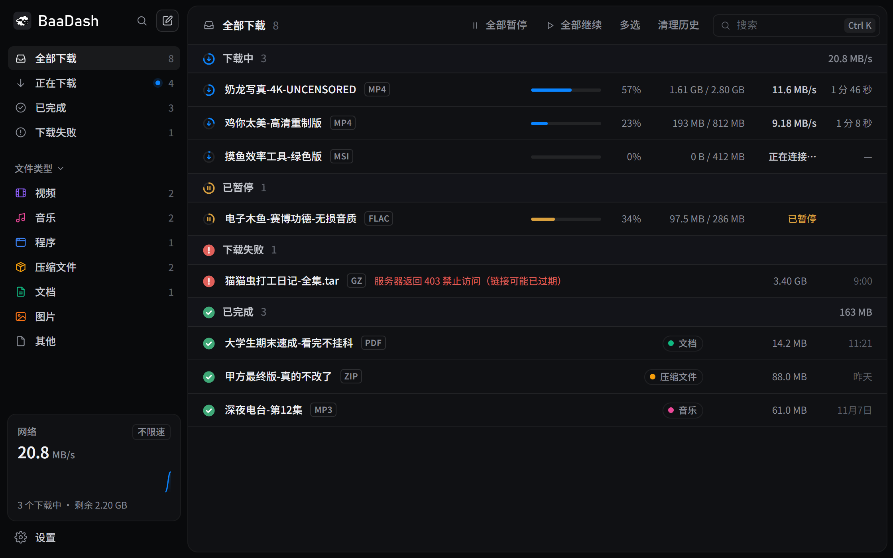
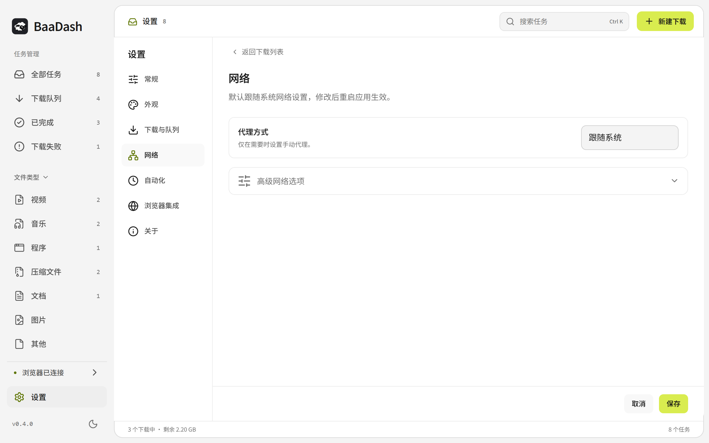
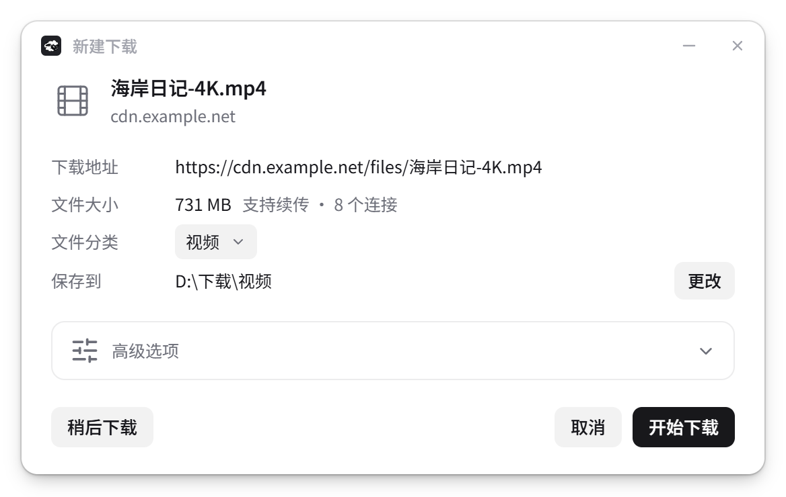
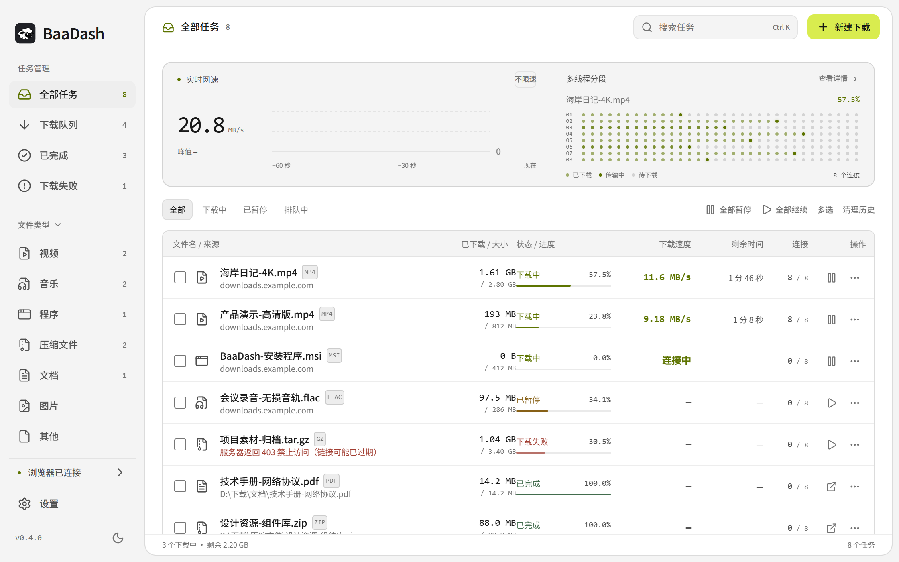

独立嗅探开关
不想检测时直接关闭。只关闭网页浮层，则仍可从扩展弹窗查看检测结果。
把文件交给队列，把屏幕留给内容。多连接下载、断点续传，以及按需出现的浏览器入口。
BaaDash v0.4.1 已发布，支持 Windows、macOS 与 Linux。

嗅探、视频浮层、图片浮层和普通下载接管分别控制。图片按钮默认关闭，视频入口在鼠标静止后自动隐藏。
不想检测时直接关闭。只关闭网页浮层，则仍可从扩展弹窗查看检测结果。
保留右键下载与主动收集本页图片；可仅对指定网站开启图片浮层。
视频封面不再视作普通图片；同一区域只保留视频入口。

显式多选、Ctrl / Cmd 多选、Shift 连选。批量暂停、继续和重试；清理记录时默认保留文件。

从分享文字里提取 HTTP / HTTPS 链接，自动去重并加入队列。
按文件类型整理，支持中文文件名，深色、浅色与系统主题。
在设置的关于页手动检查更新，查看检查结果与更新说明。
设置按常规、外观、下载与队列、网络、自动化、浏览器集成和关于分类。实时网速曲线、多连接点阵与专业数据表同时可见；文件分类完整保留，文件校验按需开启。

支持 HTTP 区间下载、动态分段和进度保存。服务器返回错误区间、续传记录不匹配或文件不完整时停止并提示。


实际速度受服务器、网络和磁盘影响；不支持 DRM 或绕过站点访问限制。续传也取决于服务器支持与文件版本校验。
支持可解析的视频与流媒体、当前 Pixiv 作品、视频另存 GIF、磁力链接和种子。以你有权保存的内容为范围。
